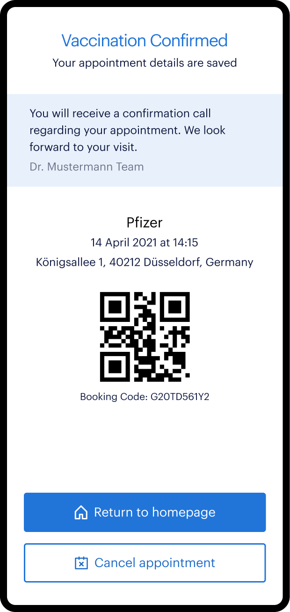
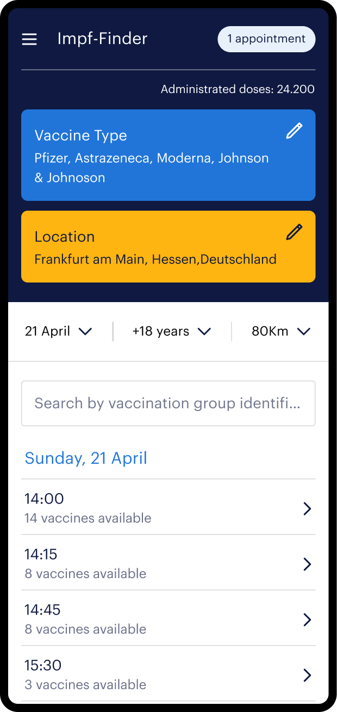
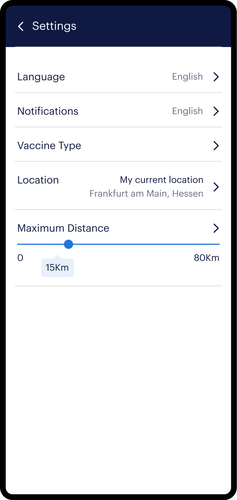
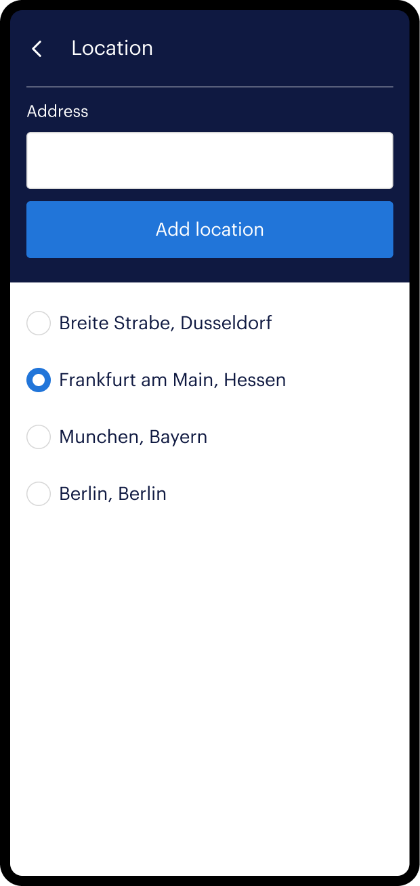
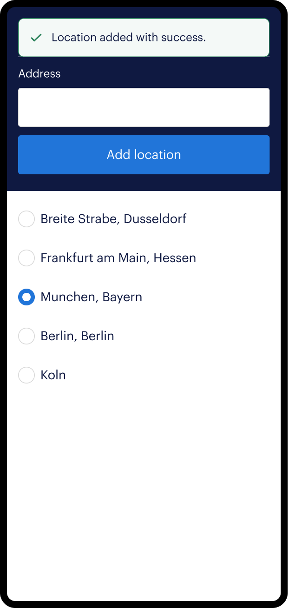

Impf-Finder
The Challenge
With many vaccination centers in Germany having leftover doses, some doctors need a quick way to distribute these vaccines before they expire and become unusable.
The Solution
We developed a mobile app to help the vaccination centers to deliver leftovers efficiently. Impf-Finder helps the user, according to their location, to find the nearest place to get vaccinated.
Responsibilities
- Designed user flows and created high-fidelity mockups and prototypes, ensuring alignment with business requirements.
- Collaborated within Agile methodology with project managers, product owners, and developers to define requirements, refine designs, and prioritize based on project goals and user needs.
- Worked closely with the development team to guarantee accurate implementation of designs.
Patient User Flow




Understanding the users' problems
Problem A — With many people still waiting to get vaccinated in their cities and some smaller towns lacking vaccine supplies, users wanted the ability to search in other cities and regions for vaccination opportunities.
To address this, we enabled users to add multiple locations and switch between them, increasing their chances of finding available vaccines.


